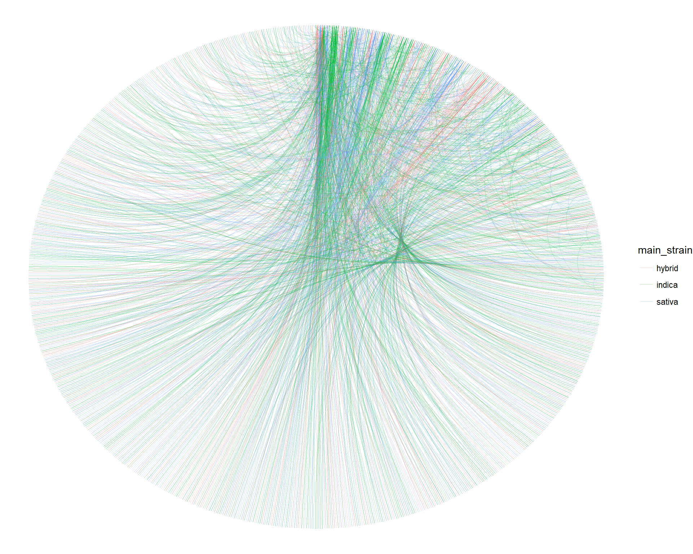

Mapping the evelotion of weed
Overview: This post will cover how to download a marijuana database via webscraping, and how to create and visualize a network that depicts the evolution of the different marijuana strains. Reading time: 45 minutes Expertise level: 3/5
https://www.ibmbigdatahub.com/blog/what-graph-analytics
The motivation
Part one: web scraping
With the amount of data that is being produced in the world today, it stands to reason that data availability is greater than ever and is only just starting to grow. Sometimes the data that one is looking for is easily accessible in a nice flat file. There is nothing like a clean and easy to download .csv document. Other times, it’s a little harder to get, as it is with APIs. These require a little more code and sometimes require you to pay for the data. APIs are extremely popular and they cover all sorts of data. For example, here is the biggest API marketplace in the world:
A lot of other times, however, the data is not in any type of structured format and just lives inside of a webpage. Although accessible, getting your hands on it is a little more customized and complicated.
Enter web scaping.
Simply put, web scarping is writing a code that extracts data from HTML pages by using the patterns people use to build their webpages. Although it is somewhat “hackerish” - which, to me honsest, is something that I am very much attracted to -, it is becoming more and more prevelant and accpeted as a part of data science. As such, it is a great tool to learn.
As Technopedia puts it:
The practice of Web scraping has drawn a lot of controversy because the terms of use for some websites do not allow certain kinds of data mining. Despite the legal challenges, Web scraping promises to become a popular way of collecting information as these kinds of aggregated data resources become more capable.
Part two: networks
Networks are a very powerful part of a data scienctist toolbox. They are created by modeling relationships or interactions between objects or individuals. And they allow for answering questions about the overall network, about the groups withing network, and about the individual elements. They can be used for:
- Finding social media influencers
- Modeling the spread of diseases
- Detecting fraud
- Optimizing delivery routes
- Recommending movies and TV shows
Among many other things.
They also allow for spectacular visualizations:

Source: Travel Between the Pages
In short
Web scraping is awesome. Networks are awesome. This post covers both in a very hands on method. I think you’re going to really enjoy it!
Setting things up
Loading libraries
The first step is always to import all the necessary libraries.
- I use the tidyverse, the ultimate data wrangling framework, and a must in every project I work on
- The stringr library is an R workhorse for text processing
- rvest is the libary Hadley Wickham, the author of the tidyverse, built for web scraping. It is perfect in that it is super easy to use and fits right into a tidyverse workstream.
- igraph probably the most used library for network analytics (available in both R and Python).
- The ggraph library was build for ploting networks within the ggplot framework. It makes plotting graphs, a notoriously difficult task to do well and efficiently, a lot easier.
- I won’t load the bc3net library, which provides additional network analytics functionality, but I will use it.
library(tidyverse)
library(stringr)
library(rvest)
library(igraph)
library(ggraph)Scraping the data
Overview of the data source
The source of the data we are going to scrape is a site called Wikileaf.

Source: https://www.wikileaf.com
Although it’s primary purpose is for people to find marijuana dispensaries, the site also includes a very extensive and incredibly detailed library of diferent marijuana strains.

With 27 pages and close to 1300 strains, it is an ideal data source.

Moreover, there is more than enough information about the different strains. The individual pages include:
- Main strain (Sativa, Indica or hybrid)
- Lineage (the “parent” strains)
- Country of origin
- Detailed description
- THC content specifics
- Common usages
- Effects


Part one: getting the lists of strains
The first thing we need to do is to get the 27 pages that contain the name and url information of all of the strains. This is easy enough: we just have to loop through the links to each of the pages. Each page contains 50 results, so we can increase a counter by 50 all the way to its maximum number, 1300.
- https://www.wikileaf.com/strains/?result=0
- https://www.wikileaf.com/strains/?result=50
- https://www.wikileaf.com/strains/?result=100
And so on.
For each of these pages, we just have to save the html, from which we can extract all the relevant information once we’ve downloaded all of the pages.
# Set up base url to which we'll add the increased counter
base_url <-
'https://www.wikileaf.com/strains/?result='
# Create a pagination vector: a sequence from 0 to 1300, by 50
pagination <-
seq(0, 1300, 50)
# Loop through the pagination numbres
for(i in 1:length(pagination)){
# Create a url by pasting the base ulr and the pagination
url_temp <-
str_c(base_url, pagination[i])
# Read the html from the page
temp_html <-
read_html(url_temp)
# Write the html onto a file in the strain lists folter
write_lines(temp_html,
str_c('strain_lists/strains_', i, '.html'))
# Take a small 4 second break
Sys.sleep(4)
# This is the "polite way of scraping" so as to not
# overwhelm the website's server with a lot of
# consecutive calls
}Perfect. Now we have a copy of each of the 27 pages saved locally. Now we can extract the relavant information without making calls to the website. We also have a local copy of the data in case we want to use it for something else. Saving local copies is something that I usually do when web scraping.
Here is a great overview of the main functionalities of the rvest package and a more detailed overview of the web scraping workflow with rvest. I recommend that you at least review the first before moving forward so that you can best understand the follwoing steps.
- General overview: https://stat4701.github.io/edav/2015/04/02/rvest_tutorial/
- Detailed tutorial: https://www.datacamp.com/community/tutorials/r-web-scraping-rvest
Now we are ready to read the pages back in and extract the links to all of the strain pages along with the names of the strains. In order to do this, we need to find the unique elements within the html that allow to zero in on the data that we want.


# First, we read in the html of the first file
# (this contains the first 50 results)
strain_file <-
read_html('strain_lists/strains_1.html')
# Within the file, we first look to extract a single strain
# We can do this by looking for the "list-item-paginate"
# class which is what distinguishes the strain elements
node <-
strain_file %>%
# html_node grabs the first instance we are looking for
html_node('.list-item-paginate')
# From the node elements, we can look for the "data-st-name"
# to get the strain name
strain_name <-
node %>%
html_attr('data-st-name')
# From node, we can look for an "a" tag node
# and within that for the "href" attribute
# to get the url of the strain page
url <-
node %>%
html_node('a') %>%
html_attr('href')
strain_name## [1] "Alien Technology"url## [1] "https://www.wikileaf.com/strain/alien-technology/"Perfect! Now we can easily wrap this logic into a function,
# The function grabs he strain and the url,
# stores them and returns a dataframe
get_link_and_name <- function(node){
temp_strain <-
node %>%
html_attr('data-st-name')
temp_url <-
node %>%
html_node('a') %>%
html_attr('href')
temp_df <-
data_frame(
strain = temp_strain,
url = temp_url
)
return(temp_df)
}
# Let's test out the function
get_link_and_name(node)## # A tibble: 1 x 2
## strain url
## <chr> <chr>
## 1 Alien Technology https://www.wikileaf.com/strain/alien-technology/That worked exactly how we wanted it!
Now we can replicate this for all of the strains in each of the list files.
# Get a list of all of the strain list files
strain_files <-
list.files('strain_lists')
# Create a repository where we will dump the scraped data
# from each of the strain list files
strain_links_repository <-
list()
# Loop across all 27 of the strain files
for(i in 1:length(strain_files)){
# Read the looped strain list file
page_temp <-
read_html(str_c('strain_lists/', strain_files[i]))
# Create a dataframe containing the scraped data
links_temp_df <-
page_temp %>%
# This is different from before where we used "html_node"
# Now we are grabbing all the nodes that match our search
html_nodes('.list-item-paginate') %>%
# Now we map each of the nodes to get_link_and_name
# which will return a list of dataframes
map(get_link_and_name) %>%
# Since all of the dataframes have the exact same structure
# we can easily create a single dataframe by collapseing
# all of the dataframes in the list with bind_rows
bind_rows()
# Save the results in the repository
strain_links_repository[[i]] <-
links_temp_df
}
# Collapse all of the dataframes in the repository to create a single one
strain_links_df <-
bind_rows(strain_links_repository) %>%
# Make sure the rows are all unique
# (this is just a best practice)
distinct() %>%
# Create unique ids for each of the strains for easy joins later on
mutate(id = 1:n())
# Make sure the dataframe is ok
head(strain_links_df)## # A tibble: 6 x 3
## strain url id
## <chr> <chr> <int>
## 1 Alien Technology https://www.wikileaf.com/strain/alien-technolog~ 1
## 2 Arcata Trainwreck https://www.wikileaf.com/strain/arcata-trainwre~ 2
## 3 Aspen OG https://www.wikileaf.com/strain/aspen-og/ 3
## 4 Blue Cookies https://www.wikileaf.com/strain/blue-cookies/ 4
## 5 Blue Dream https://www.wikileaf.com/strain/blue-dream/ 5
## 6 Blue God https://www.wikileaf.com/strain/blue-god/ 6
Movie note: although not as good as Airborne, I’ve always thought Grind (from where the GIF was made) was a pretty underrated skater movie.
Part two: downloading the strain pages
With the links to the individual pages of the strains, we can visit each page and, just like with the list pages, save the html files locally. However, because there are over 1300 strain pages versus just 27 strain list pages, we have to build a little more structure in order to handle errors, which have a high probability of occuring when trying to ping a website that many times.
For a great and detailes walkthrough of error handling in, I recommend the following CRAN article: https://cran.r-project.org/web/packages/tryCatchLog/vignettes/tryCatchLog-intro.html
# Set empty vector to store the ids of the pages that
# did not download well and start a count of the number
# of consecutve failures.
failed_ids <- c()
repeat_errors <- 0
# Loop through all the strains in the dataframe
for(i in 1:nrow(strain_links_df)){
# Get train links and ID
link <- strain_links_df$url[i]
id <- strain_links_df$id[i]
# Error handling while reading the html
html_article <-
tryCatch(
# Try to read html page
read_html(link),
# If warning or error, return null
warning = function(w) {
NULL;
},
error = function(e) {
NULL;
}
)
# So if the page read correctly, html_article contains the html.
# If there was an error, html_article will be null.
# If there was an error, log it
if( is.null(html_article) ){
# Add idd of strain that caused the error
failed_ids <-
c(failed_ids, id)
# Add count of consecutive errors
repeat_errors <-
repeat_errors + 1
# Message the number of repeat errors
message( str_c('Repeat errors: ', repeat_errors) )
# If there are more than 5 consecutive errors,
# break the loop (stops all downloading)
if( repeat_errors > 5 ){
break
}
# If there was an error, and there aren't
# more than 5 consecutive errors,
# go to next strain
next
}
# Reset repeat errors counter if no error found
repeat_errors <- 0
# Set name of the file where the html will be saved
strain_doc_name <-
str_c('strain_pages/', id, '.html')
# Write the html file
write_lines(html_article,
strain_doc_name)
#message(id)
# In order to not make a lot of calls to the website
# in a very short period of time (one right after the other)
# pause the code for a few seconds between the download
Sys.sleep(
# Pauses between 0 and 10 seconds (random)
runif(1, min = 0, max = 10)
)
}That seemed to run smoothly. We can check to see how many files are in the strain_files folder and also see which strains failed to be parsed.
# Get number of strain pages stored
list.files('strain_pages') %>%
length()## [1] 1326# See which strains failed to be scraped
failed_ids## [1] 270Part three: scraping the strain pages
Now that we have the pages for all of the strains, we can build the code that reads them one by one and grabs all of the necessary information. As mentioned previously, we are looking for:
Main strain (Sativa, Indica or hybrid) 
Lineage (the “parent” strains) 
Country of origin 
Detailed description 
THC content specifics 
Common usages and Effects 
I won’t walk trhough the details of logic behind each of the data points we are looking for. Instead, I’ll go straight into building the function that we will apply to each of the strain pages. The comments in the code should be enough to guide you through the scrape.
For each of the data points we are interrested in, the get_strain_info function extract the relevant data and creates a dataframe containing the category (description, lineage, etc.), the variable (for THC, for example, the averagge main strain, the highest strain test and the average strain test), and the value. The dataframes are then collapsed into one and returned.
Not all strains have lineage or origin. So for these data points, we have to create an error handling structure that returns a NULL or an NA, depending what is most appropriate, whenever the data point is not found.
I appologize for the length of the following code. There was no way of getting around it.
# Get list of all the strain pages
strain_pages <-
list.files('strain_pages') %>%
# Paste the folder name with the name of the file
str_c('strain_pages/', .)
get_strain_info <- function(strain_page, msg = FALSE){
# When set to TRUE, the msg parameter allows for
# the function to message the page being scraped
if(msg == TRUE){
message(strain_page)
}
# Read html page
page <-
read_html(strain_page)
### 1. Description
# Extract html text from the strain-content class
description <-
page %>%
html_node('.strain-content') %>%
html_text()
# Create dataframe with data
description_df <-
data_frame(category = 'description',
var = 'description',
val = description)
### 2. THC
# Extract html text from the .strain-bar-title classes
# inside of the strain_thc id
# This gets the variables names
thc <-
page %>%
html_node('#strain_thc') %>%
html_nodes('.strain-bar-title') %>%
html_text() %>%
# Get rid of excess spaces at the beginning and end
str_trim()
# Extract html text from the graph-val classes
# inside of the strain_thc id
# This gets the data values
thc_values <-
page %>%
html_node('#strain_thc') %>%
html_nodes('.graph-val') %>%
html_text() %>%
# Remove the percentage sign from the value
str_replace_all('%', '')
# Create a dataframe with the thc variables and values
thc_df <-
data_frame(category = 'thc',
var = thc,
val = thc_values)
### 3. Use
# Extract html text from the strain-bar-title classes
# inside of the strain_use id
# This gets the variables names
use <-
page %>%
html_node('#strain_use') %>%
html_nodes('.strain-bar-title') %>%
html_text() %>%
str_trim()
# Extract value attribute from the input tags
# inside of the strain_use id
# This gets the data values
use_values <-
page %>%
html_node('#strain_use') %>%
html_nodes('input') %>%
html_attr('value')
# Create a dataframe with the use variables and values
use_df <-
data_frame(category = 'use',
var = use,
val = use_values)
### 3. Effects
# This works in the exact same way as the "use"" extraction
effects <-
page %>%
html_node('#effects') %>%
html_nodes('.strain-bar-title') %>%
html_text() %>%
str_trim()
effects_values <-
page %>%
html_node('#effects') %>%
html_nodes('input') %>%
html_attr('value')
effects_df <-
data_frame(category = 'effects',
var = effects,
val = effects_values)
### 4. Lineage
# Create an error handling mechanism
# when there is no llineage information
lineage <-
tryCatch(
# Extract html text from the a tags
# inside of the lineage class
page %>%
html_node('.lineage') %>%
html_nodes('a') %>%
html_text() %>%
str_trim(),
warning = function(w) {
NULL;
},
error = function(e) {
NULL;
}
)
# Convert NULL values or empty vectors into NA
# This is to create a vector of lenght > 1
# to feed into the dataframe
# R will give an error otherwise
if(length(lineage) == 0 | is.null(lineage)){
lineage <- NA
}
# Create a lineage dataframe
# Add an order component to the variable name
# to be able to distinguish the different lineages
lineage_df <-
data_frame(category = 'lineage',
val = lineage) %>%
mutate(ord = 1:n()) %>%
mutate(var = str_c('lineage ', ord)) %>%
select(-ord)
### 5. Origin
origin <-
tryCatch(
# Extract html text from the origin class
# This is a little more involved
# in order to handle multiple country names
page %>%
html_node('.origin') %>%
html_text() %>%
str_trim() %>%
# Remover the text before the country name
str_replace_all('Origin: ', '') %>%
# The following is for handling multiple
# countries of origin:
# Replace the space inside a country name
# with "iii" in order to distinguish it
# when separating the country names
# For example: "HolandUnited States"
# becomes: "HolandUnitediiiStates"
str_replace_all(' ', 'iii') %>%
# Convert the snakecase to an underscore
# For example: "HolandUnitediiiStates"
# becomes: "Holand_Unitediii_States"
snakecase::to_mixed_case() %>%
# Replace "iii_ with space"
# For example: "Holand_Unitediii_States"
# becomes: "Holand_United States"
str_replace_all('iii_', ' ') %>%
# Separate the country names
# where there is an underscore
str_split('_') %>%
# Convert resulting list into a vector
unlist(),
warning = function(w) {
NA;
},
error = function(e) {
NA;
}
)
# Create a dataframe with origin data
# with same order logic as lineage
origin_df <-
data_frame(category = 'origin',
val = origin) %>%
mutate(ord = 1:n()) %>%
mutate(var = str_c('origin ', ord)) %>%
select(-ord)
### Join all the data
# Collapse the dataframes into a single one
temp_df <-
bind_rows(
description_df,
thc_df,
use_df,
effects_df,
lineage_df,
origin_df
) %>%
# Remove the text from the folder an page name
# to get a numeric id value for joins
mutate(id =
strain_page %>%
str_replace_all(
'strain_pages/|\\.html',
'') %>%
as.numeric())
# Return resulting dataframe
return(temp_df)
}
# Try the get_strain_info function on the first 5 pages
strain_details_test <-
map(strain_pages[1:5], get_strain_info, msg = TRUE)## strain_pages/1.html## strain_pages/10.html## strain_pages/100.html## strain_pages/1000.html## strain_pages/1001.html# Head the result of the first page
# to make sure it worked
head(strain_details_test[[1]] %>%
# Remove description so that it fits
filter(var != 'description'))## # A tibble: 6 x 4
## category var val id
## <chr> <chr> <chr> <dbl>
## 1 thc Average Indica 12.5 1.00
## 2 thc Alien Technology Highest Test 19.0 1.00
## 3 thc Alien Technology Average 13.0 1.00
## 4 use Insomnia 100 1.00
## 5 use Pain 100 1.00
## 6 use Anxiety 60 1.00Fiuf! All that code worked! Now we can run the function on all of the pages.
if(file.exists('strain_details_df.rds')){
strain_details_df <-
read_rds('strain_details_df.rds')
}else{
strain_details <-
map(strain_pages, get_strain_info, msg = TRUE)
strain_details_df <-
strain_details %>%
bind_rows()
write_rds(strain_details_df, 'strain_details_df.rds')
}
strain_details_df$id %>%
unique() %>%
length()## [1] 1253strain_details_df_wide <-
strain_details_df %>%
mutate(var =
ifelse(str_detect(var, 'Highest Test'), 'highest test',
ifelse(str_detect(var, 'Average$'), 'average',
var))) %>%
mutate(var =
var %>%
str_replace_all(' ', '_') %>%
tolower()) %>%
mutate(var =
ifelse(str_detect(category, 'description|lineage'), var,
str_c(category, '__', var))) %>%
mutate(var =
var %>%
str_replace_all('[^a-zA-z0-9 ]', '')) %>%
select(-category) %>%
group_by(id, var) %>%
slice(1) %>%
ungroup() %>%
spread(var, val) %>%
mutate(thc__average_indica =
ifelse(is.na(thc__average_indica), 0, thc__average_indica),
thc__average_sativa =
ifelse(is.na(thc__average_sativa), 0, thc__average_sativa),
thc__average_hybrid =
ifelse(is.na(thc__average_hybrid), 0, thc__average_hybrid)) %>%
mutate(main_strain =
ifelse(thc__average_indica > thc__average_sativa &
thc__average_indica > thc__average_hybrid, 'indica',
ifelse(thc__average_sativa > thc__average_indica &
thc__average_sativa > thc__average_hybrid, 'sativa',
'hybrid'))) %>%
left_join(strain_links_df %>%
select(id, strain),
by = 'id')
str(strain_details_df_wide)## Classes 'tbl_df', 'tbl' and 'data.frame': 1253 obs. of 50 variables:
## $ id : num 1 2 3 4 5 6 7 8 9 10 ...
## $ description : chr "\nOne of the original landrace strains that precipitated the popularization of cannabis throughout the world, H"| __truncated__ "\nBorn of two unknown Skunk varieties, Orange Bud by Dutch Passion boasts brilliant flavors, an ultra creative "| __truncated__ "\nNYC Diesel is a mostly Sativa hybrid that has won 9 different cannabis cup awards (though not every award has"| __truncated__ "\nAs a strain with one of the highest levels of THC, this Sativa-dominant cross offers one of the most potent h"| __truncated__ ...
## $ effects__cotton_mouth: chr "40" "20" NA "20" ...
## $ effects__creativity : chr NA NA "80" "60" ...
## $ effects__dizziness : chr NA NA NA NA ...
## $ effects__dry_eyes : chr NA NA NA NA ...
## $ effects__energy : chr NA "60" "100" "80" ...
## $ effects__euphoria : chr "60" "100" "80" "100" ...
## $ effects__focus : chr NA NA "20" NA ...
## $ effects__happy : chr NA NA NA NA ...
## $ effects__headache : chr NA NA NA NA ...
## $ effects__hungry : chr NA NA NA NA ...
## $ effects__paranoia : chr NA NA "20" "60" ...
## $ effects__relax : chr "60" "80" NA NA ...
## $ effects__sedated : chr "100" "40" NA NA ...
## $ effects__sleep : chr "80" NA NA NA ...
## $ effects__social : chr NA NA NA NA ...
## $ lineage_1 : chr NA "Skunk #1" NA "Haze" ...
## $ lineage_2 : chr NA NA NA "White Widow" ...
## $ lineage_3 : chr NA NA NA NA ...
## $ lineage_4 : chr NA NA NA NA ...
## $ origin__origin_1 : chr NA "Netherlands" NA NA ...
## $ origin__origin_2 : chr NA "United States" NA NA ...
## $ origin__origin_3 : chr NA NA NA NA ...
## $ origin__origin_4 : chr NA NA NA NA ...
## $ origin__origin_5 : chr NA NA NA NA ...
## $ origin__origin_6 : chr NA NA NA NA ...
## $ origin__origin_7 : chr NA NA NA NA ...
## $ thc__average : chr "14.0" "13.0" "15.0" "18.0" ...
## $ thc__average_hybrid : chr "0" "0" "0" "0" ...
## $ thc__average_indica : chr "12.5" "12.5" "0" "0" ...
## $ thc__average_sativa : chr "0" "0" "13.5" "13.5" ...
## $ thc__highest_test : chr "20.0" "16.5" "21.5" "21.6" ...
## $ use__addadhd : chr NA NA NA NA ...
## $ use__alzheimers : chr NA NA NA NA ...
## $ use__anxiety : chr "40" "80" "80" "80" ...
## $ use__arthritis : chr NA NA NA NA ...
## $ use__asthma : chr NA NA NA NA ...
## $ use__depression : chr "60" "60" "100" "100" ...
## $ use__eating_disorders: chr NA NA NA NA ...
## $ use__insomnia : chr "100" NA NA NA ...
## $ use__loss_of_appetite: chr "40" "60" "60" "40" ...
## $ use__migraines : chr NA NA NA NA ...
## $ use__nausea : chr NA "20" "60" "40" ...
## $ use__pain : chr "100" "100" "20" "20" ...
## $ use__ptsd : chr NA NA NA NA ...
## $ use__stress : chr NA NA NA NA ...
## $ use__womens_health : chr NA NA NA NA ...
## $ main_strain : chr "indica" "indica" "sativa" "sativa" ...
## $ strain : chr "Alien Technology" "Arcata Trainwreck" "Aspen OG" "Blue Cookies" ...main_strains_df <-
strain_details_df_wide %>%
select(strain, main_strain)
network_df <-
strain_details_df %>%
filter(category == 'lineage') %>%
filter(!is.na(val)) %>%
left_join(strain_links_df %>%
select(id, strain),
by = 'id') %>%
select(val, strain) %>%
rename(from = val,
to = strain) %>%
inner_join(main_strains_df,
by = c('from' = 'strain'))
head(network_df)## # A tibble: 6 x 3
## from to main_strain
## <chr> <chr> <chr>
## 1 Haze Girl Scout Cookies hybrid
## 2 Neville's Haze Girl Scout Cookies hybrid
## 3 OG Kush Eugene Cream sativa
## 4 Afghani Eugene Cream hybrid
## 5 Skunk #1 Azure Haze indica
## 6 Afghani Azure Haze hybridg_green <-
graph_from_data_frame(network_df) %>%
bc3net::getgcc()
g_green %>%
ggraph(layout = 'linear', circular = TRUE) +
geom_edge_arc(aes(col = main_strain),
edge_width = .3, alpha = .3) +
theme_void()